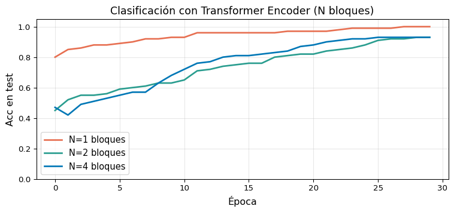

class PreNormBlock(nn.Module):"""Pre-Norm Encoder Block (estilo moderno)"""def__init__(self, d_model, num_heads, d_ff, dropout=0.1):super().__init__()self.mha = nn.MultiheadAttention( d_model, num_heads, dropout=dropout, batch_first=True)self.ffn = PositionwiseFFN( d_model, d_ff, dropout)self.norm1 = nn.LayerNorm(d_model)self.norm2 = nn.LayerNorm(d_model)self.drop = nn.Dropout(dropout)def forward(self, x):# Norm ANTES del sub-bloque a, _ =self.mha(self.norm1(x),self.norm1(x),self.norm1(x)) x = x +self.drop(a) x = x +self.drop(self.ffn(self.norm2(x)))return x
Práctica: BERT usa Post-Norm; GPT-2, LLaMA usan Pre-Norm.
Experimento: Clasificación con Encoder
Code
import torchimport torch.nn as nnimport torch.optim as optimimport matplotlib.pyplot as pltimport numpy as nptorch.manual_seed(0)# --- Dataset sintético de clasificación binaria ---def make_data(n=400, T=20, V=200):"""Clase 0: tokens 1–99; Clase 1: tokens 100–199""" X0 = torch.randint(1, 100, (n //2, T)) X1 = torch.randint(100, 200, (n //2, T)) X = torch.cat([X0, X1]) y = torch.cat([torch.zeros(n//2, dtype=torch.long), torch.ones(n//2, dtype=torch.long)]) perm = torch.randperm(n)return X[perm], y[perm]class TransformerClassifier(nn.Module):def__init__(self, vocab_size, d_model, num_heads, d_ff, N, max_len):super().__init__()self.encoder = TransformerEncoder( vocab_size, d_model, num_heads, d_ff, N, max_len)self.cls = nn.Linear(d_model, 2)def forward(self, x): enc =self.encoder(x) # (B, T, d) pooled = enc.mean(dim=1) # (B, d)returnself.cls(pooled)X, y = make_data(n=600)X_tr, y_tr = X[:500], y[:500]X_te, y_te = X[500:], y[500:]def train_model(N_blocks, epochs=30, lr=3e-4): model = TransformerClassifier( vocab_size=200, d_model=32, num_heads=4, d_ff=128, N=N_blocks, max_len=20 ) opt = optim.Adam(model.parameters(), lr=lr) loss_fn = nn.CrossEntropyLoss() accs = []for ep inrange(epochs): model.train() opt.zero_grad() loss = loss_fn(model(X_tr), y_tr) loss.backward(); opt.step() model.eval()with torch.no_grad(): pred = model(X_te).argmax(1) accs.append((pred == y_te).float().mean().item())return accsfig, ax = plt.subplots(figsize=(8, 3.8))colors = ['#e76f51', '#2a9d8f', '#0077b6']for N, col inzip([1, 2, 4], colors): accs = train_model(N) ax.plot(accs, color=col, lw=2, label=f'N={N} bloques')ax.set_xlabel('Época', fontsize=12)ax.set_ylabel('Acc en test', fontsize=12)ax.set_title('Clasificación con Transformer Encoder (N bloques)', fontsize=13)ax.legend(fontsize=11); ax.grid(True, alpha=0.3)ax.set_ylim(0, 1.05)plt.tight_layout(); plt.show()

Tamaño y Costo Computacional
Parámetros por bloque encoder (\(d_\text{model}=512\), \(h=8\), \(d_\text{ff}=2048\)):
Componente
Parámetros
MHA (\(W_Q, W_K, W_V, W_O\))
\(4 \times d^2 = 1{,}048{,}576\)
FFN (\(W_1, W_2\))
\(2 \times d \times d_{ff} = 2{,}097{,}152\)
LayerNorm × 2
\(4 \times d = 4{,}096\)
Total por bloque
≈ 3.1M
Con \(N=6\) bloques: ≈ 18.7M params (encoder only)
Complejidad temporal:
Operación
Costo
MHA
\(O(T^2 \cdot d)\)
FFN
\(O(T \cdot d^2)\)
LayerNorm
\(O(T \cdot d)\)
MHA domina para secuencias largas → motivación para variantes eficientes.
🔜 Semana 10 — BERT: MLM, NSP, fine-tuning, Hugging Face
Referencias
Vaswani, A., Shazeer, N., Parmar, N., Uszkoreit, J., Jones, L., Gomez, A. N., Kaiser, Ł., & Polosukhin, I. (2017). Attention Is All You Need. NeurIPS 2017.
He, K., Zhang, X., Ren, S., & Sun, J. (2016). Deep Residual Learning for Image Recognition. CVPR 2016.
Ba, J. L., Kiros, J. R., & Hinton, G. E. (2016). Layer Normalization. arXiv:1607.06450.
Devlin, J., Chang, M.-W., Lee, K., & Toutanova, K. (2019). BERT: Pre-training of Deep Bidirectional Transformers for Language Understanding. NAACL 2019.
Xiong, R. et al. (2020). On Layer Normalization in the Transformer Architecture. ICML 2020.
Clark, K., Khandelwal, U., Levy, O., & Manning, C. D. (2019). What Does BERT Look at? An Analysis of BERT’s Attention. ACL 2019 Workshop.